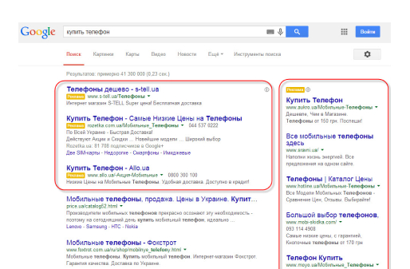

Контекстная реклама
Получайте клиентов через Google поисковик через 1 день
Контекстная Реклама в Goole Search - наиболее востребованная и эффективная реклама в интернете для прмых продаж услуг или товара. Ваше рекламное объявление пользователь, будет видеть на первых четырех местах в Поиске Гугл, вбивая свой запрос. Например: куить ламинат.
Преимущества контекстной рекламы
Универсальный маркетинговый инструмент, который подходит для любого бизнеса.
Низкий стартовый бюджет
Заказать контекстную рекламу можно даже при небольшом бюджете и при этом получить результат
Быстрый запуск и результат
Сделали упор в кампании на конверсии, отказавшись от кампаний "Продажи по каталогу"

Максимальный охват целевой аудитории
Внесли изменения, которые напрямую влияли на конверсии
Эффективная настройка и управление
Эффективная оптимизация и мониторинг рекламы. Сбор списка минус слов и добавление новых запросов
Запуск рекламы в Google Ads состоит из следующих этапов
1. Написание стратегии
Изучаем заполненный клиентом бриф, а после начинаем изучать нишу компании и анализировать конкурентов. Составляем портрет целевой аудитории и отсеиваем нецелевую, чтобы снизить расходы на рекламу. Параллельно мы оцениваем сезонность бизнеса и даём рекомендации заказчику относительно сезонности спроса. После всего этого разрабатывается стратегия для достижения ваших целей.
2. Настройка Аналитики и рекламного аккаунта Google Ads
Мы создаем рекламный аккаунт Google Ads, Google Analytics и Google Tag Manager для заказчика. Также для интернет-магазинов создаем кабинет Google Merchant Center для Торговых кампаний, если договорились об этом. Настраиваем все аккаунты и связываем между собой.
3. Сбор ключевых слов
С помощью специальной программы для сбора статистики по поисковым запросам пользователей мы составляем семантическое ядро — список ключевых слов, которые будут наиболее эффективно продвигать ваш товар.
4. Сбор минус-слов
С помощью различных сервисов мы собираем минус-слова и минус-фразы и добавляем их в рекламный кабинет, чтобы не сливать бюджет на клики по нерелевантным запросам.
5. Создание рекламных объявлений
У контекстной рекламы есть своя специфика: рекламные объявления должны быть достаточно ёмкими и при этом цеплять потенциального покупаеля. Объявления формируются с учетом УТП, полученного от клиента или сформированного специалистом при анализе бизнеса, сайта заказчика и анализа конкурентов. Наши специалисты — как PPC, так и копирайтеры, — знают, как составлять эффективные рекламные объявления.
6. Настройка и запуск рекламных кампаний
Составляем привлекательные рекламные объявления в google ads и настраиваем рекламную кампанию с учётом возраста, интересов и географии потенциальных клиентов. Настройка рекламы и всех необходимых аккаунтов и сервисов для заказчика занимает около 7-10 рабочих дней.
7. Аналитика и оптимизация рекламных кампаний
Мы делаем аудит рекламных кампаний, анализируем результаты, оцениваем эффективность и решаем, как оптимизировать рекламные кампании, чтобы привлечь больше лидов в кампанию, снизить CPL и CPO (стоимость 1 лида и стоимость заказа) и увеличить количество заказов, звонков и обращений в компанию, ориентируясь на рентабельность затрат на рекламу — показатели ROI и ROMI. В конце каждого месяца мы предоставляем отчет с результатами анализа.
ЧЕМ ОТЛИЧАЕТСЯ SMM ПРОДВИЖЕНИЕ ОТ ТАРГЕТИРОВАННОЙ РЕКЛАМЫ?
ЧЕМ ОТЛИЧАЕТСЯ SMM ПРОДВИЖЕНИЕ ОТ ТАРГЕТИРОВАННОЙ РЕКЛАМЫ?
ЧЕМ ОТЛИЧАЕТСЯ SMM ПРОДВИЖЕНИЕ ОТ ТАРГЕТИРОВАННОЙ РЕКЛАМЫ?
ЧЕМ ОТЛИЧАЕТСЯ SMM ПРОДВИЖЕНИЕ ОТ ТАРГЕТИРОВАННОЙ РЕКЛАМЫ?